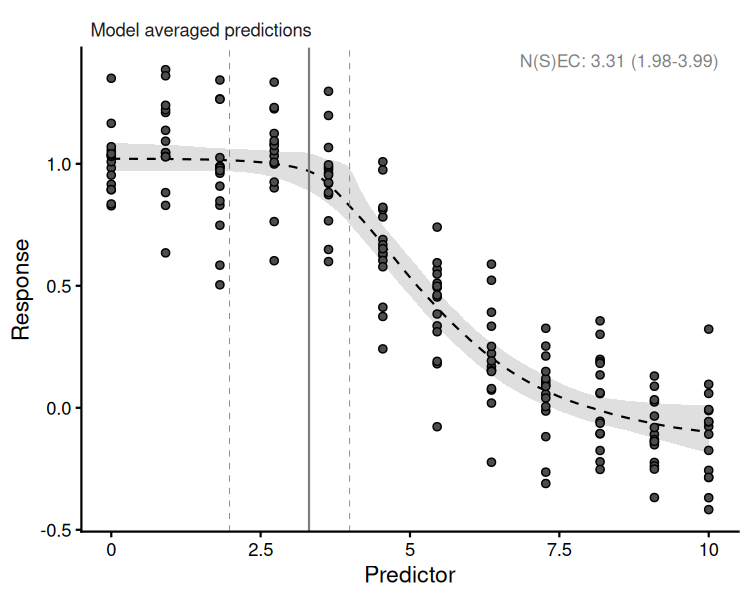
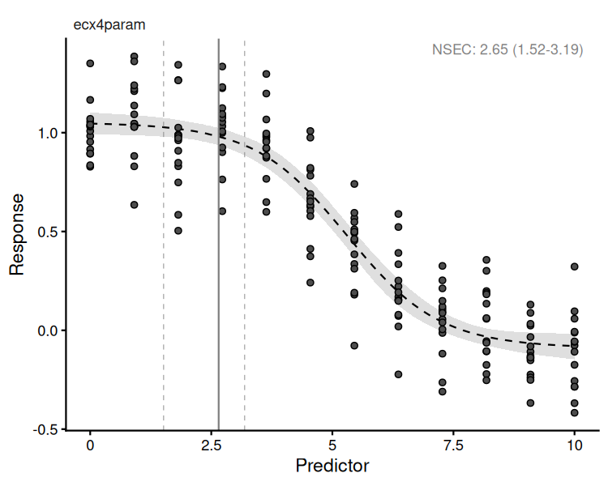
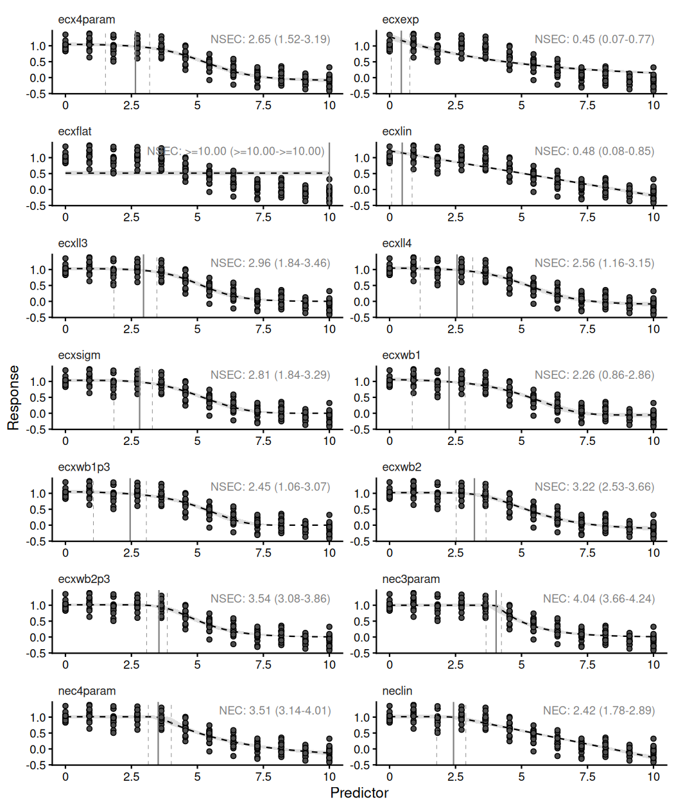
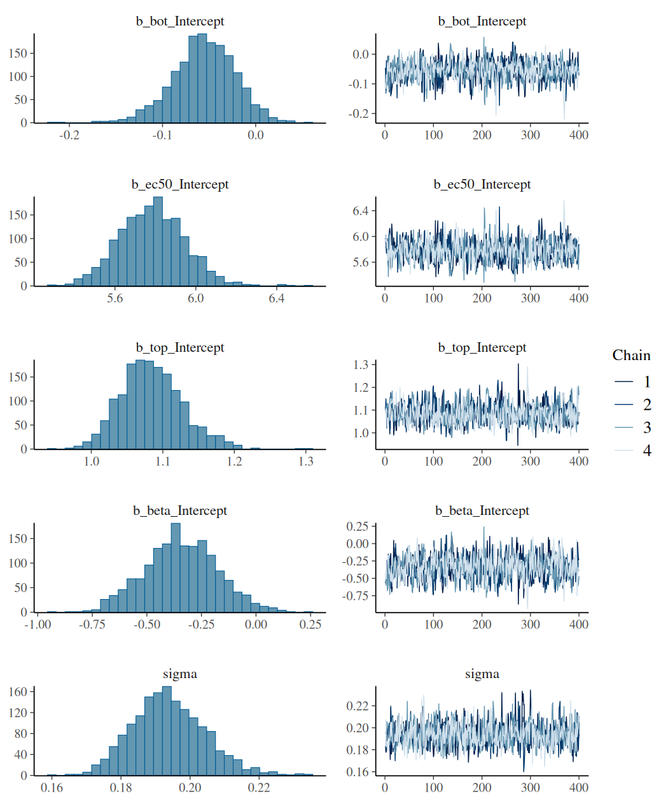
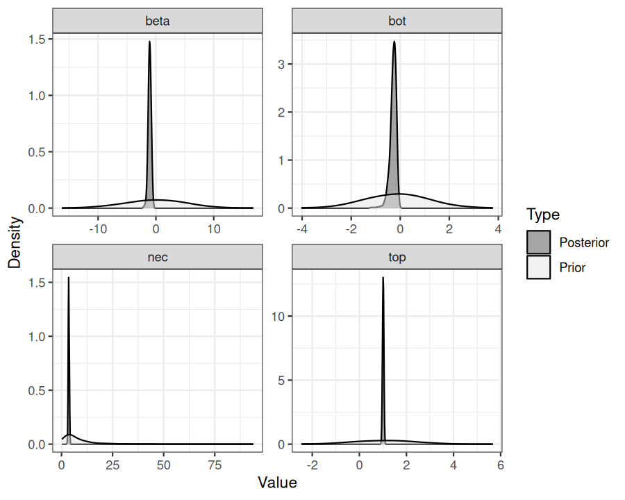
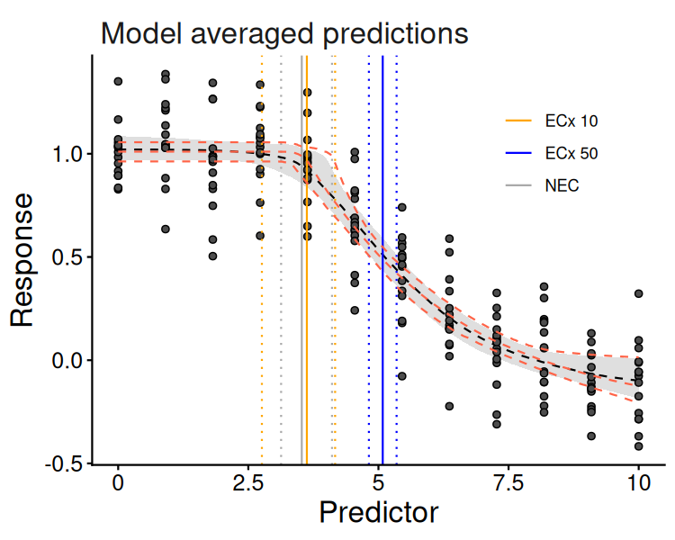

bayesnec
The background of bayesnec is covered in the Single
model usage vignette. Here we explain multi model usage using
bayesnec. In bayesnec it is possible to fit a
custom model set, specific model set, or all of the available models.
When multiple models are specified the bnec function
returns a model weighted estimate of predicted posterior values, based
on the "pseudobma" using Bayesian bootstrap through
loo_model_weights (Vehtari et al.
2026, 2017). These are reasonably analogous to the way model
weights are generated using AIC or AICc (Burnham
and Anderson 2002).
It is also possible to obtain all individual model fits from the
fitted bayesnecfit model object if required using the
pull_out function, and also to update an existing model fit
with additional models, or to drop models using the function
amend.
Multi-model inference can be useful where there are a range of
plausible models that could be used (Burnham and
Anderson 2002) and has been recently adopted in ecotoxicology for
Species Sensitivity Distribution (SSD) model inference (Thorley et al. 2026). The approach may have
considerable value in concentration-response modelling because there is
often no a priori knowledge of the functional form that the
response relationship should take. In this case model averaging can be a
useful way of allowing the data to drive the model selection process,
with weights proportional to how well the individual models fits the
data. Well-fitting models will have high weights, dominating the model
averaged outcome. Conversely, poorly fitting models will have very low
model weights and will therefore have little influence on the outcome.
Where multiple models fit the data equally well, these can equally
influence the outcome, and the resultant posterior predictions reflect
that model uncertainty. It is possible to specify the
"stacking" method (Yao et al.
2018) for model weights if desired (through the argument
loo_controls) which aims to minimise prediction error. We
do not currently recommend using stacking weights given the typical
sample sizes associated with most concentration—response experiments,
and because the main motivation for model averaging within the
bayesnec package is to properly capture model uncertainty
rather than reduce prediction error.
bnec function
bnec model
So far we have explored how to fit individual models via the function
bnec. The bayesnec package also has the
capacity to fit a custom selection of models, pre-specified sets of
models, or even all the available models in the package. Note that as
these are Bayesian methods requiring multiple Hamiltonian Monte Carlo
(HMC) chains, using bnec can be very slow when specifying
models = "all" within a bayesnecformula. See
details under ?bnec for more information on the models, and
model sets that can be specified, as well as the Model
details vignette which contains considerable information on the
available models in bnec and their appropriate usage. In
general it is safe to call models = "all", because by
default bnec will discard invalid models and the model
averaging approach should result in an overall fit that reflects the
models that best fit the data. However, because the HMC can be slow for
models = "all" we do recommend testing your fit using a
single (likely) model in the first instance, to make sure there are no
issues with dispersion, the appropriate distribution is selected and
model fitting appears robust (see the Single
model usage vignette for more details).
To run this vignette, we will need the ggplot2
package:
library(bayesnec)
# function which generates an "ecx4param" model
make_ecx_data <- function(top, bot, ec50, beta, x) {
top + (bot - top) / (1 + exp((ec50 - x) * exp(beta)))
}
x <- seq(0, 10, length = 12)
y <- make_ecx_data(x = x, bot = 0, top = 1, beta = 0.5, ec50 = 5)
set.seed(333)
df_ <- data.frame(x = rep(x, 15), y = rnorm(15 * length(x), y, 0.2))
exp_5 <- bnec(y ~ crf(x, model = "decline"), data = df_, iter = 2e3,
cores = getOption("mc.cores", 1))Here we run bnec using model = "decline"
using a simulated data example for a Gaussian-distributed response
variable. We are using the "decline" set here because we
are not going to consider hormesis (these allow an initial increase in
the response), largely to save time in fitting this example. Moreover,
you might want to consider saving the output as an .RData
file—doing so can be a useful way of fitting large model sets (ie
model = "all", or model = "decline") at a
convenient time (this can be very slow, and may be run overnight for
example) so you can reload them later to explore, plot, extract values,
and amend the model set as required.
Whenever the model argument of crf is a
model set, or a concatenation of specific models, bnec will
return an object of class bayesmanecfit.
bayesmanecfit model
We have created some plotting method functions for both the
bayesnecfit and bayesmanecfit model fits, so
we can plot a bayesmanecfit model object simply with
autoplot.
autoplot(exp_5)
plot of chunk exmp2-decline
The default plot looks exactly the same as our regular
bayesnecfit plot, but the output is based on a weighted
average of all the model fits in the model = "decline"
model set that were able to fit successfully using the default
bnec settings. Because the model set contains a mix of
NEC and ECx models, no-effect toxicity estimate
reported by default on this plot (and in the summary output below) is
reported as a N(S)EC (see Fisher et al.
(2024)).
The fitted bayesmanecfit object contains different
elements to the bayesnecfit. In particular,
mod_stats contains the table of model fit statistics for
all the fitted models. This includes the model name, the WAIC (as
returned from brms), wi (the model weight, currently
defaulting to "pseudobma" using Bayesian bootstrap from
loo), and the dispersion estimates (only reported if
response is modelled with a Poisson or Binomial distribution, otherwise
NA).
exp_5$mod_stats
#> model waic elpd wi dispersion_Estimate dispersion_Q2.5 dispersion_Q97.5
#> nec3param nec3param -72.14396 36.05841 2.056834e-02 NA NA NA
#> nec4param nec4param -84.95172 42.45160 3.798331e-01 NA NA NA
#> neclin neclin -52.29203 26.13489 1.870590e-04 NA NA NA
#> ecxlin ecxlin -26.28965 13.13538 1.403286e-07 NA NA NA
#> ecxexp ecxexp 65.94475 -32.97761 5.931159e-24 NA NA NA
#> ecxsigm ecxsigm -77.63117 38.80472 3.581168e-02 NA NA NA
#> ecx4param ecx4param -81.86810 40.91369 9.517308e-02 NA NA NA
#> ecxwb1 ecxwb1 -75.21155 37.58990 1.149892e-02 NA NA NA
#> ecxwb2 ecxwb2 -85.06792 42.51409 2.900955e-01 NA NA NA
#> ecxwb1p3 ecxwb1p3 -74.45185 37.20817 1.247815e-02 NA NA NA
#> ecxwb2p3 ecxwb2p3 -77.25285 38.61320 5.177007e-02 NA NA NA
#> ecxll4 ecxll4 -81.18987 40.57428 6.842721e-02 NA NA NA
#> ecxll3 ecxll3 -77.20556 38.58596 3.415673e-02 NA NA NA
#> ecxflat ecxflat 260.66017 -130.33435 1.370639e-65 NA NA NA
#> dispersion_P_over_1
#> nec3param NA
#> nec4param NA
#> neclin NA
#> ecxlin NA
#> ecxexp NA
#> ecxsigm NA
#> ecx4param NA
#> ecxwb1 NA
#> ecxwb2 NA
#> ecxwb1p3 NA
#> ecxwb2p3 NA
#> ecxll4 NA
#> ecxll3 NA
#> ecxflat NAWe can obtain a neater summary of the model fit by using the
summary method for a bayesmanecfit object. A
list of fitted models, and model weights are provided. In addition, the
model averaged no-effect estimate is reported, in this case as an
N(S)EC. For this example the nec4param and
ecxwb2 models have the highest weights.
All these model fits are satisfactory despite the relatively low
number of iterations set in our example. The summary also gives the
number of divergent transitions after warmup for each model, and would
include a warning for any model with more than 10 (the cutoff used by
check_sampling()).
summary(exp_5)
#> Object of class bayesmanecfit
#>
#> Family: gaussian
#> Links: mu = identity
#>
#> Number of posterior draws per model: 1600
#>
#> Model weights (Method: pseudobma_bb_weights; each observation left out):
#> waic elpd wi
#> nec3param -72.14 36.06 0.02
#> nec4param -84.95 42.45 0.38
#> neclin -52.29 26.13 0.00
#> ecxlin -26.29 13.14 0.00
#> ecxexp 65.94 -32.98 0.00
#> ecxsigm -77.63 38.80 0.04
#> ecx4param -81.87 40.91 0.10
#> ecxwb1 -75.21 37.59 0.01
#> ecxwb2 -85.07 42.51 0.29
#> ecxwb1p3 -74.45 37.21 0.01
#> ecxwb2p3 -77.25 38.61 0.05
#> ecxll4 -81.19 40.57 0.07
#> ecxll3 -77.21 38.59 0.03
#> ecxflat 260.66 -130.33 0.00
#>
#>
#> Summary of weighted N(S)EC posterior estimates:
#> NB: Model set combines sampled NEC and curve-read NSEC
#> estimates in proportion to model weight.
#> Estimate Q2.5 Q97.5
#> N(S)EC 3.31 1.98 3.99
#>
#>
#> Bayesian R2 estimates:
#> Estimate Est.Error Q2.5 Q97.5
#> nec3param 0.83 0.01 0.81 0.85
#> nec4param 0.86 0.01 0.84 0.87
#> neclin 0.83 0.01 0.80 0.84
#> ecxlin 0.80 0.01 0.77 0.82
#> ecxexp 0.61 0.03 0.55 0.65
#> ecxsigm 0.84 0.01 0.82 0.85
#> ecx4param 0.85 0.01 0.84 0.87
#> ecxwb1 0.85 0.01 0.83 0.86
#> ecxwb2 0.86 0.01 0.84 0.87
#> ecxwb1p3 0.84 0.01 0.82 0.85
#> ecxwb2p3 0.84 0.01 0.82 0.85
#> ecxll4 0.85 0.01 0.84 0.87
#> ecxll3 0.84 0.01 0.82 0.85
#> ecxflat 0.00 0.00 0.00 0.00
#>
#>
#> Divergent transitions after warmup:
#> n_divergent
#> nec3param 0
#> nec4param 0
#> neclin 0
#> ecxlin 0
#> ecxexp 0
#> ecxsigm 0
#> ecx4param 0
#> ecxwb1 0
#> ecxwb2 0
#> ecxwb1p3 0
#> ecxwb2p3 0
#> ecxll4 0
#> ecxll3 0
#> ecxflat 0
#>
#>
#> 1 model(s) failed to fit: ecxll5
#> See ?failed_models for the priors and initial values used.
#>
#> Fitted by bayesnec 2.1.3.44, installed from a local source, which records no commit, under R 4.6.1.The bayesmanecfit object also contains all of the
individual brms model fits, which can be extracted using
the pull_out function. For example, we can pull out and
plot the model ecx4param.

plot of chunk exmp2-ecx4param
This would extract the nec4param model from the
bayesmanecfit and create a new object of class
bayesnecfit which contains just a single fit. This would be
identical to fitting the ecx4param as a single model
using bnec. Several models in the
bayesmanecfit can be plotted together by naming them in the
argument model (here we plot all of the models that fitted
successfully), and setting average = FALSE omits the panel
of model averaged predictions.
autoplot(exp_5, model = exp_5$success_models, average = FALSE)
plot of chunk exmp2-allmods
You can see that some of these models represent very bad fits, and accordingly have extremely low model weights, such as the ecxlin and neclin models in this example. There is no harm in leaving in poor models with low weight, precisely because they have such a low model weight and therefore will not influence posterior predictions. However, it is important to assess the adequacy of model fits of all models, because a poor fit may be more to do with a model that has not converged.
We can assess the chains for one of the higher weighted models to make sure they show good convergence. It is good practice to do this for all models with a high weight, as these are the models most influencing the multi-model inference.
plot(pull_brmsfit(exp_5, "ecxwb1"))
plot of chunk exmp2-goodmod
Assessing chains for all the models in bayesmanecfit
does not work as well using the default brms plotting
method. Instead use check_chains and make sure to pass a
filename argument, which means plots are automatically
saved to pdf with a message.
check_chains(exp_5, filename = "example_5_all_chains")We can also make a plot to compare the posterior probability density
to that of the prior using the check_priors function, for
an individual model fit, but also saving all fits to a file in the
working directory.
check_priors(pull_out(exp_5, "nec4param"))
plot of chunk exmp2-checkpriors
check_priors(exp_5, filename = "example_5_all_priors")Where a large number of models are failing to converge, obviously it
would be better to adjust iter and warmup in
the bnec call, as well as some of the other arguments to
brms such as adapt_delta. See the
?brm documentation for more details. It is possible to
investigate if models from a bayesmanecfit class achieved
convergence according to Rhat:
rhat(exp_5) |>
sapply("[[", "failed")
#> nec3param nec4param neclin ecxlin ecxexp ecxsigm ecx4param ecxwb1 ecxwb2 ecxwb1p3 ecxwb2p3
#> FALSE TRUE FALSE FALSE FALSE FALSE FALSE FALSE FALSE FALSE FALSE
#> ecxll4 ecxll3 ecxflat
#> TRUE FALSE FALSEThe default cut off is 1.01, following the recommendation of Vehtari et al. (2021) that Rhat should not
exceed 1.01 at convergence. Any model returning TRUE here
did not converge, and should be dropped before the set is averaged. Note
that we have also used far fewer than the default bayesnec
iter (10,000) here, which makes convergence harder than it
would usually be.
The older and more permissive cut off of 1.05 can also be used by changing the argument, although this is mainly useful for comparison with analyses that predate the current recommendation:
rhat(exp_5, rhat_cutoff = 1.05) |>
sapply("[[", "failed")
#> nec3param nec4param neclin ecxlin ecxexp ecxsigm ecx4param ecxwb1 ecxwb2 ecxwb1p3 ecxwb2p3
#> FALSE FALSE FALSE FALSE FALSE FALSE FALSE FALSE FALSE FALSE FALSE
#> ecxll4 ecxll3 ecxflat
#> FALSE FALSE FALSEThe rhat() function returns only Rhat, whereas
check_sampling() returns all three sampler diagnostics
(Rhat, effective sample size and the number of divergent transitions)
for each candidate model:
check_sampling(exp_5)
#> model max_rhat min_ess min_ess_ratio n_divergent failed
#> 1 nec3param 1.009273 332.1574 0.2075984 0 TRUE
#> 2 nec4param 1.010144 480.7366 0.3004604 0 TRUE
#> 3 neclin 1.005700 624.0328 0.3900205 0 FALSE
#> 4 ecxlin 1.007916 626.0950 0.3913094 0 FALSE
#> 5 ecxexp 1.008185 697.0696 0.4356685 0 FALSE
#> 6 ecxsigm 1.004028 556.1325 0.3475828 0 FALSE
#> 7 ecx4param 1.004052 754.9726 0.4718579 0 FALSE
#> 8 ecxwb1 1.006168 681.2412 0.4257757 0 FALSE
#> 9 ecxwb2 1.009685 598.0465 0.3737791 0 FALSE
#> 10 ecxwb1p3 1.006678 705.5896 0.4409935 0 FALSE
#> 11 ecxwb2p3 1.009592 842.8158 0.5267599 0 FALSE
#> 12 ecxll4 1.010013 517.1654 0.3232284 0 TRUE
#> 13 ecxll3 1.002405 758.4739 0.4740462 0 FALSE
#> 14 ecxflat 1.002579 857.3529 0.5358456 0 FALSEThe screen_models() function screens the candidate
models on these three diagnostics together, and drops any candidate that
failed. It also prints a message naming each model dropped and the
reason, and this message is the record of the exclusion (an exclusion
step that does not name the models it drops cannot be written up).
exp_5_screened <- screen_models(exp_5)
#> Dropping 3 of 14 candidate models that failed the sampler screen:
#> - nec3param: ESS 332.2
#> - nec4param: Rhat 1.01
#> - ecxll4: Rhat 1.01
#> Fitted models are: neclin ecxlin ecxexp ecxsigm ecx4param ecxwb1 ecxwb2 ecxwb1p3 ecxwb2p3 ecxll3 ecxflat
#> The fitted ecxflat curve does not fall to the control's 0.01 quantile within the predictor range for 1584 of 1600 draws. The NSEC summary is censored at 10: those draws keep their rank in it and are given no value.Here screen_models() dropped 3 of the 14 candidates, and
its message names each of them and the diagnostic it failed. The
screened object exp_5_screened contains only the candidates
that passed, while exp_5 still contains all of them.
The models prefixed with ecx are all models that do
not have the NEC as a parameter in the model. That is, they are
smooth curves as a function of concentration and have no breakpoint (no
true No-Effect-Concentration, NEC). Thus the reported no-effect toxicity
estimate is the NSEC (Fisher and Fox 2023)
(see the Model
details vignette for more details). The no-effect estimate of the
hormesis threshold equations, nechorme,
nechorme4, neclinhorme,
nechormepwr, nechorme4pwr and
nechormepwr01, is also an NSEC, because the fitted
response at their
parameter can be above the control. A model averaged NEC based
only on threshold models therefore comes from the four monotone
threshold equations, nec3param,
nec4param, neclin and
necsigm. The "nec" model group also
includes the hormesis threshold equations, so model = "nec"
gives a pure NEC only for a set fitted without them, such as
the "decline" set used here. We can use the helper
functions pull_out and amend to alter the
model set as required. pull_out has a model
argument and can be used to pull a single model out (as above) or to
pull out a specific set of models.
We can use this to obtain first a set of NEC only models from the existing set.
exp_5_nec <- pull_out(exp_5, model = "nec")In this case, because we have already fitted "decline"
models, we can ignore the message regarding the missing NEC
models—these are all models that are not appropriate for the family and
link bnec selected for these data, or allow hormesis, which
we did not consider in this example.
Now we have two model sets, an NEC set, and a mixed
NEC and ECx set. Of course, before we use this model
set for any inference, we would need to check the chain mixing and
acf plot for each of the input models. For the “all” set,
the model with the highest weight is nec4param.
Now we can use the ecx function to get
EC10 and EC50 values. We can do
this using our all model set, because it is valid to use NEC
models for estimating ECx (see more information in the Model
details vignette).
ECx10 <- ecx(exp_5, ecx_val = 10)
ECx50 <- ecx(exp_5, ecx_val = 50)
ECx10
#> Q50 Q2.5 Q97.5
#> 3.624993 2.760964 4.167579
#> attr(,"resolution")
#> [1] 500
#> attr(,"ecx_val")
#> [1] 10
#> attr(,"toxicity_estimate")
#> [1] "ecx"
ECx50
#> Q50 Q2.5 Q97.5
#> 5.082466 4.816782 5.348731
#> attr(,"resolution")
#> [1] 500
#> attr(,"ecx_val")
#> [1] 50
#> attr(,"toxicity_estimate")
#> [1] "ecx"The weighted NEC estimates can be extracted directly from the NEC model set object, as they are an explicit parameter in these models.
NECvals <- exp_5_nec$w_ne
NECvals
#> Estimate Q2.5 Q97.5
#> 3.527155 3.130124 4.108291Note that the new NEC estimates from the nec-containing model fits are slightly higher than those reported in the summary output of all the fitted models. This can happen for smooth curves, which is what was used as the underlying data generation model in the simulations here, and is explored in more detail in the Comparing posterior predictions vignette.
Now we can make a combined plot of our output, showing the model averaged NEC model and the “all averaged model”, along with the relevant thresholds.
preds <- exp_5_nec$w_pred_vals$data
autoplot(exp_5, nec = FALSE) +
geom_vline(mapping = aes(xintercept = ECx10, colour = "ECx 10"),
linetype = c(1, 3, 3), key_glyph = "path") +
geom_vline(mapping = aes(xintercept = ECx50, colour = "ECx 50"),
linetype = c(1, 3, 3), key_glyph = "path") +
geom_vline(mapping = aes(xintercept = NECvals, colour = "NEC"),
linetype = c(1, 3, 3), key_glyph = "path") +
scale_color_manual(values = c("ECx 10" = "orange", "ECx 50" = "blue",
"NEC" = "darkgrey"), name = "") +
geom_line(data = preds, mapping = aes(x = x, y = Estimate),
colour = "tomato", linetype = 2) +
geom_line(data = preds, mapping = aes(x = x, y = Q2.5),
colour = "tomato", linetype = 2) +
geom_line(data = preds, mapping = aes(x = x, y = Q97.5),
colour = "tomato", linetype = 2) +
theme(legend.position = c(0.8, 0.8),
axis.title = element_text(size = 16),
axis.text = element_text(size = 12),
strip.text.x = element_text(size = 16))
plot of chunk exmp2-pretty
The model set above was fitted with
cores = getOption("mc.cores", 1), which takes the number of
chains sampled at once from the mc.cores option. Because
chains defaults to four and brm() samples at
most chains at a time, the chains were sampled four at a
time on the machine used to build this vignette, whereas in a session
where mc.cores is unset they are sampled one after another.
You can choose by setting mc.cores, or by passing
cores directly. Sampling the chains of a single model at
once is the narrower of two kinds of parallel computation available for
a model set. The models themselves can also be fitted at once, because
they do not depend on one another, and because there are typically more
models in a set than there are chains.
bnec() fits the models one at a time unless a parallel
future
plan has been set, and setting one before the call is all that is
required:
library(future)
plan(multisession, workers = 8)
exp_5_par <- bnec(y ~ crf(x, model = "decline"), data = df_,
iter = 2e3, seed = 322)
plan(sequential)There is no argument to bnec() that turns this on or
off, because the plan already records how much of the machine you are
willing to use, and a second way of setting it would only disagree with
the first. The cores argument is different, and is passed
through to brm() like any of its other arguments (its
effect under a plan is described under Chains within models
below). The future and future.apply packages
are suggested, not required, and without them (or without a plan) the
models are fitted in sequence. amend() uses a plan
likewise, for whichever models it has to fit.
plan(multisession) is the portable choice (it is
available on all platforms), and it starts new R processes that
communicate with the parent session over local sockets. In contrast,
plan(multicore) forks the current process, which starts
faster and shares memory with the parent instead of copying it. However,
forking is unavailable on Windows and inside RStudio and Positron, and
there the plan silently resolves to a single worker. Because
bnec() prints the number of workers it was given, a plan
that has collapsed to one worker can be identified from that message,
and not only from a slow fit.
On the WSL2 machine on which this section was written, a two-model
fit completed under multicore in five of five runs (taking
84 to 90 seconds), but under multisession in none of four
runs, each of which produced no output at all before it was killed. A
separate thirteen-model run under multisession failed in a
different way, with both workers stopping with
error writing to connection and the parent session then
waiting indefinitely.
The cause was not established, although it is very likely to be in a
layer below R. The Windows subsystem logged name-resolution failures
during these runs, which is consistent with a problem in the socket
layer that multisession relies on and
multicore does not use. In addition, this code runs
successfully under multisession on Linux, macOS and Windows
in the continuous integration checks of this package, so the problem,
whatever its cause, is not general.
The socket layer that multisession depends on is outside
the control of R, and where it fails the symptom is a run that neither
finishes nor returns an error. We therefore recommend checking that a
plan works before committing a long run to it, by fitting two models
with a small iter under the intended plan and confirming
that the call returns. The recommendation here is to make this check,
not to use a particular backend, although if multisession
stalls on Linux or macOS, multicore (which uses no sockets)
is the plan to try.
Under a forked plan, we recommend the cmdstanr backend.
The default backend, rstan, compiles each model in the
temporary directory of the session, which a forked worker shares with
the process it was forked from. When thirteen models were compiled at
once in eight forked workers, all thirteen failed with
cannot open the connection from stanc. In
contrast, a multisession worker is a separate R session
with its own temporary directory, so compilation under
rstan does not collide there. cmdstanr names
each compiled program after a hash of its Stan code and keeps it in a
cache directory, so that concurrent compiles of different models do not
collide, and a repeated run reuses the programs already built. To select
it, set options(brms.backend = "cmdstanr"), which is the
setting used to build the vignettes of this package. Note that
cmdstanr is not on CRAN and is not a dependency of
bayesnec (see the Installation
and setup vignette, or its
own installation instructions, if you do not already have it
installed).
Two models in two forked workers did not collide, whereas thirteen models in eight forked workers did, so a small trial does not reveal this problem, and the two-model check described under Choosing a plan does not test for it. The shared temporary directory is consistent with this failure but was not isolated as its cause (eight compilers running at once also use eight times the memory), and the failure was seen on only one machine.
To measure what a plan changes, we fitted the "decline"
set without ecxflat (fourteen equations, of which 13 fit
these data and ecxll5 does not initialise) in five ways.
The runs were made on 2026-09-12 on an otherwise idle 22-core
workstation under WSL2 (R 4.6.1, cmdstanr,
plan(multicore), iter = 2e3,
chains = 4). Each run started from a fresh R session with
the compiled-program cache emptied first, so that nothing was compiled
in advance and each run built all 13 programs. Runs during which any
other R process appeared were discarded and repeated (three were), and
where a configuration has two runs the time shown is their midpoint.
Because the fit shown earlier in this vignette also includes
ecxflat, these timings are a separate measurement, not a
description of that fit.
| plan | cores in use | runs | seconds | range | change vs no plan |
|---|---|---|---|---|---|
| no plan | 4, one per chain | 2 | 299.5 | 293.7-305.3 | – |
workers = 2 |
2, one per model | 3 | 226.4 | 216.3-240.5 | -24% |
workers = 4 |
4, one per model | 2 | 174.2 | 167.8-180.6 | -42% |
workers = 8 |
8, one per model | 2 | 149.9 | 146.7-153.2 | -50% |
workers = 5, cores = 4
|
20, four per model | 2 | 153.5 | 149.7-157.3 | -49% |
The cores listed in the table are those used for sampling. The elapsed time decreased as the number of workers increased, and was halved with eight workers, while five workers sampling four chains each (20 cores in total) took about as long as eight workers (153.5 against 149.9 seconds). Compilation is single-threaded for each program, so a run with no plan compiles the thirteen programs one after another on one core, whereas a plan of n workers compiles n at a time. This is why two workers completed the fit in 24 per cent less time than the nominally four-core baseline.
We then ran the five configurations again (one run each) with the programs already built, and they took 99, 114, 108, 101 and 94 seconds, respectively, in the order of the table. Two workers then took 15 per cent longer than no plan, which is outside the spread these configurations show. The other three were within a few per cent of the sequential fit, a difference that one run each cannot resolve. Compilation is what the plan was overlapping. Once compilation is removed, the effect of the number of cores in use becomes visible: the sequential fit samples four chains on four cores, so two workers sampling one chain each use fewer cores than the fit they replace, and four workers use four cores arranged differently. Only with more than four workers does a plan use more cores than the sequential fit was already using. With the programs built, the remaining time is spent on sampling (which takes seconds per model) and on the work done in the calling process whatever plan is set (the model weights, the leave-one-out comparisons and the prediction grid are all computed there, after the fits are returned). How the remaining time divides between these was not measured, and no claim is made about it here.
The advice therefore depends on which run is being timed. A first fit of a model set, on a machine where the programs are not already built, is limited by compilation and parallelises well (see the table above). A repeat fit of that set against a warm cache (i.e. with the programs already built) is limited by sampling, so for models as small as these nothing is gained, and a plan with too few workers adds time. Where a single model takes minutes, not seconds, sampling dominates in both cases, and the pattern in the table above applies to the repeat run as well.
Parallel chains within a model and parallel models within a set can
be used together. Under a parallel plan of more than one worker,
bnec() passes cores = 1 to brm()
(each model then samples its chains in sequence), but a
cores value that you supply yourself is deliberately left
unchanged, so that parallel chains nest within parallel models:
plan(multisession, workers = 5)
exp_5_nested <- bnec(y ~ crf(x, model = "decline"), data = df_,
iter = 2e3, cores = 4, seed = 322)
plan(sequential)This fits five models at a time with four chains each, so that twenty chains are sampled at once. This arrangement suits a cluster allocation, where the number of cores is known in advance and is larger than any one model can use. We recommend dividing such an allocation between models and chains, instead of giving all of it to either.
Given a seed, each model fitted under a parallel plan is
identical to that model fitted in sequence, although this does not
happen automatically. future gives each worker its own
random number generator, and the initial-value search in
bnec() seeds itself with set.seed, which does
not restore the generator kind (the algorithm used to generate
the random numbers). Without a correction, one seed would therefore
produce different starting values in a worker than in the parent
session. To prevent this, the generator kind of the parent session is
restored in each worker before fitting, and a test in the package checks
this equality.
The model weights and the model-averaged quantities are the
exception, because both are computed from the random number stream of
the session once the models are fitted. The pseudo-BMA weights are
calculated by a Bayesian bootstrap, which draws from that stream, and
bnec() then draws a seed from the same stream to decide
which posterior draws each model contributes to the averaged estimate. A
sequential run has advanced that stream through the
set.seed call in each initial-value search, whereas a
parallel run leaves the stream unchanged, so that models fitted in
workers cannot disturb whatever the session was doing. The model
weights, the averaged nec, its credible interval and the
stored prediction grid therefore differ between sequential and parallel
runs. Both results are valid, as the two runs apply the same weighting
procedure to identical fitted models and differ only in the random
numbers that procedure uses. Calling set.seed in your own
session before bnec() fixes the weights and the averaging
draw under a plan, and two parallel runs then agree.
Each worker keeps a complete fit in memory while it is working, and fits are large. Eight workers on a large data set can therefore exhaust memory where eight cores would have been sufficient. In addition, a worker killed by the operating system ends the whole call, not only the model it was fitting. If a run fails without an R error, we recommend reducing the number of workers before looking for any other cause.
There are also two smaller effects. First, a
multisession or cluster worker is a new R
process that has to load bayesnec (and with it
brms and the Stan backend) before it can fit anything. This
takes about three seconds, incurred once for each worker, which is
important for a set of three models but not for a set of twenty-four. A
forked multicore worker inherits what the parent has
already loaded, and does not incur this delay. Second, everything the
fit needs (i.e. the data, the formula and the priors) is sent to each
worker, so a very large data set may reach the export limit of
future. Raise the limit with
options(future.globals.maxSize = ). If the limit is reached
although the data are not large, check whether the formula names a
function you have defined (e.g. a transformation written inside
crf()). bnec() keeps only the objects named in
the formula (and not supplied in the data) from the environment in which
the formula was created, but such a function is sent together with the
environment in which it was defined, which may contain large
objects.
Progress reporting also changes under a plan. The per-model messages
printed by bnec() come from worker processes, and arrive
out of order or not at all, depending on the platform. However, nothing
is lost, as a model that fails is still recorded, the remaining models
are still fitted, and the failures can be examined with
failed_models().